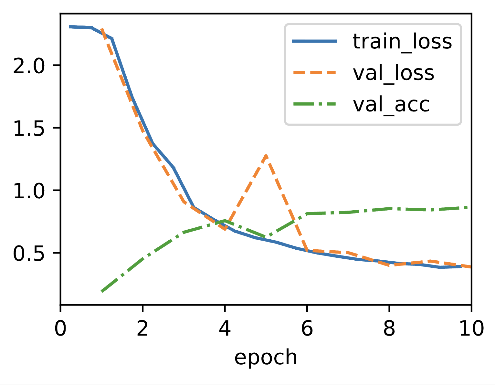

Modern Convolutional Neural Networks
Chapter 8: From AlexNet to Transformers
Based on "Dive into Deep Learning" by Zhang et al.
Instructor: Hafsteinn Einarsson
University of Iceland
The Evolution of CNNs: From Basic to Modern
Why Modern CNNs Matter
CNNs have revolutionized computer vision and serve as fundamental building blocks for:
Object Tracking
ByteTrackMulti-object tracking by associating every detection box (Zhang et al., 2021)
Segmentation
FCNFully Convolutional Networks for semantic segmentation (Long et al., 2015)
Object Detection
YOLOYou Only Look Once - real-time object detection (Redmon & Farhadi, 2018)
Style Transfer
Neural StyleImage style transfer using CNNs (Gatys et al., 2016)
Modern CNNs are not just classifiers - they're universal feature extractors for vision tasks
ImageNet: The Benchmark of Progress
Since 2010, ImageNet has been the barometer of supervised learning in computer vision
Key Winners & Breakthroughs (top 5 error rates)
Test Your Understanding
A Tour of Groundbreaking Architectures
The CNN Hall of Fame
Two Ideas That Changed Everything
🔄 Batch Normalization
Problem: Internal covariate shift - layer inputs constantly changing
Solution: Normalize inputs to each layer
Impact: Faster training, higher learning rates, less careful initialization
➕ Residual Connections
Problem: Vanishing gradients in very deep networks
Solution: Skip connections that add input to output
Impact: Networks with 100s of layers became trainable
These techniques are now standard in nearly all deep networks, not just CNNs!
The Era of Efficient and Automated Design
From Manual to Automatic Architecture Design
📱 Efficiency Focus
- MobileNet: Depthwise separable convolutions
- ShiftNet: Zero-FLOP coordinate shifts
- EfficientNet: Compound scaling
Goal: Deploy on mobile/edge devices
🤖 Automated Search
- NASNet: Neural Architecture Search
- MobileNet v3: Hardware-aware NAS
- RegNet: Design space exploration
Goal: Let algorithms design networks
RegNet Insight: Systematic exploration revealed that good networks share common design principles - depth, width, and groups follow simple quantized linear relationships
Test Your Understanding
The Transformer Revolution in Vision
Beyond Convolutions: Vision Transformers
Starting with ViT (2021), Transformers began displacing CNNs in computer vision
| Aspect | CNNs | Vision Transformers |
|---|---|---|
| Inductive Bias | Strong (locality, translation invariance) | Weak (learned from data) |
| Data Requirements | Works well with less data | Needs large-scale data |
| Receptive Field | Grows with depth | Global from the start |
| Computational Cost | Linear with image size | Quadratic with sequence length |
Key Innovations:
- ViT: "An image is worth 16x16 words" - treats image patches as tokens
- Swin Transformer: Hierarchical vision transformer with shifted windows
Modern Insights: It's Not Just Architecture
ConvNeXt: Modernizing CNNs (2022)
🎯 Training Matters
Modern training recipes (optimizers, augmentation, regularization) can be more important than architecture
📐 Revisiting Assumptions
Larger kernels (7x7) can outperform the standard 3x3 with modern compute and data
⚖️ Design Principles
Simple, uniform designs often outperform complex, heterogeneous ones
ConvNeXt Results:
By modernizing a standard ResNet with Transformer-inspired modifications and training techniques, ConvNeXt matched or exceeded Swin Transformer performance!
Key Takeaway: The gap between CNNs and Transformers may be smaller than we thought - training recipes and design details matter immensely
Test Your Understanding
What's Next in This Chapter
Deep Dives into Each Architecture
8.1 AlexNet
The network that started the deep learning revolution
8.2 VGG
Networks using repeated blocks
8.3 NiN
Network in Network - 1x1 convolutions
8.4 GoogLeNet
Multi-branch Inception modules
8.5 Batch Norm
Training deep networks effectively
8.6 ResNet
Residual connections and ResNeXt
8.7 DenseNet
Dense connections between layers
8.8 Design
Systematic architecture design
Each architecture contributed key ideas that are still used today!
AlexNet: The 2012 Breakthrough That Changed Everything
The Network That Started the Deep Learning Revolution
In 2012, AlexNet won the ImageNet competition by a stunning margin
The Architects
Alex Krizhevsky - Lead developer, created cuda-convnet
Ilya Sutskever - Co-architect, former Chief Scientist at OpenAI and founder of Safe Superintelligence
Geoffrey Hinton - Advisor, "Godfather of Deep Learning"
Impact: AlexNet proved that deep learning could outperform hand-crafted features, triggering the AI revolution we see today
From Feature Engineering to Feature Learning
The Paradigm Shift in Computer Vision
Traditional Pipeline (Pre-2012)
Deep Learning Pipeline (Post-2012)
The Key Insight
Instead of manually designing features, let the network learn them from data!
AlexNet vs LeNet: Evolution of CNN Architecture
17 Years of Progress (1995 → 2012)
| Aspect | LeNet-5 (1998) | AlexNet (2012) |
|---|---|---|
| Depth | 5 layers | 8 layers |
| Parameters | 60K | 60M (1000x more!) |
| Input Size | 32×32 grayscale | 224×224 RGB |
| Activation | Tanh/Sigmoid | ReLURectified Linear Unit: f(x) = max(0, x), faster to compute and helps with vanishing gradients |
| Regularization | None | DropoutRandomly drops neurons during training to prevent overfitting |
| Normalization | None | LRNLocal Response Normalization: Normalizes activations across neighboring channels |
| Training | CPU | GPU (2× GTX 580) |
| Dataset | MNIST (60K) | ImageNet (1.2M) |
Test Your Understanding
AlexNet Architecture: Layer-by-Layer Breakdown
8 Layers of Learned Representations
Progressive Feature Extraction
Detects edges, colors, textures
Combines simple features
Builds complex patterns
High-level reasoning & classification
Key Architectural Design Choices
Why These Specific Numbers?
Convolution Window Sizes
Channel Progression: 96 → 256 → 384 → 384 → 256
Increases capacity in middle layers where features are most complex
Max Pooling Strategy
- 3×3 windows with stride 2 (overlapping pooling)
- Reduces overfitting compared to non-overlapping
- Applied after layers 1, 2, and 5
Test Your Understanding
ReLU: The Activation Function Revolution
Why ReLU Changed Everything
ReLU Advantages
Computational Efficiency
$$\text{ReLU}(x) = \max(0, x)$$
No exponentials, just comparison!
Gradient Flow
$$\frac{d}{dx}\text{ReLU}(x) = \begin{cases} 1 & x > 0 \\ 0 & x \leq 0 \end{cases}$$
No vanishing gradients for positive inputs
Sparsity
~50% of neurons output zero
Creates sparse representations
Problems with Sigmoid/Tanh
- Vanishing Gradients: $$\frac{d}{dx}\sigma(x) = \sigma(x)(1-\sigma(x))$$ approaches 0 for large |x|
- Computational Cost: Exponential operations are expensiveExponential functions require multiple CPU cycles because they involve complex mathematical operations like Taylor series approximation or lookup tables with interpolation. Modern CPUs need ~10-20 cycles for exp() vs 1 cycle for ReLU's simple comparison (max(0,x)). With millions of activations per forward pass, this difference becomes significant.
Dropout: Regularization Through Randomness
Preventing Overfitting with 60M Parameters
Mathematical Formulation
Training:
$$r_j \sim \text{Bernoulli}(p)$$
$$\tilde{y} = r \odot y$$
Inference:
$$y_{\text{test}} = p \cdot y$$
Where p is the keep probability (1 - dropout rate)
Why Dropout Works
- Ensemble Effect: Training multiple sub-networks simultaneously
- Co-adaptation Prevention: Neurons can't rely on specific other neurons
- Robustness: Network learns redundant representations
Data Augmentation: Creating More Training Data
Expanding the Dataset Without New Images
AlexNet's Augmentation Pipeline
Random Crops
Extract 224×224 patches from 256×256 images
Increases dataset by 2048×
Horizontal Flips
Mirror images horizontally
Doubles the dataset
PCA Color Augmentation
Add multiples of principal components
Captures lighting variations
Local Response Normalization (LRN)
Lateral Inhibition in Neural Networks
Mathematical Definition
$$b_{x,y}^i = \frac{a_{x,y}^i}{\left(k + \alpha \sum_{j=\max(0,i-n/2)}^{\min(N-1,i+n/2)} (a_{x,y}^j)^2\right)^\beta}$$
Where:
- $a_{x,y}^i$ = activity of neuron at position (x,y) in channel i
- $b_{x,y}^i$ = normalized activity
- n = number of adjacent channels to normalize over
- k = 2, α = 10⁻⁴, β = 0.75 (hyperparameters)
Biological Inspiration
Mimics lateral inhibitionA neural mechanism where activated neurons suppress the activity of neighboring neurons, creating competition in the visual cortex
Creates competition between feature maps
Note: LRN is rarely used today - Batch Normalization proved more effective
Test Your Understanding
The Data Revolution: ImageNet's Game-Changing Scale
From Toy Datasets to Real-World Scale
Dataset Evolution
MNIST (1998)
CIFAR-10 (2009)
ImageNet (2009)
LAION-5B (2022)
Why ImageNet Was Different
📊 Scale
20× larger than previous benchmarks
1000 images per class
🎯 Diversity
Real-world images from the web
Natural backgrounds and variations
🏷️ Quality
Human-verified labels
WordNet hierarchy organization
🔬 Resolution
High-resolution images
Enables learning fine details
Key Insight: Deep networks need large datasets to reach their potential - with small data, simpler models often work better
The Hardware Revolution: GPUs Enable Deep Learning
GPU Evolution for Deep Learning
1999: GeForce 256
480 MFLOPS
Graphics only
2006: CUDA Launch
General computing on GPUs
C-like programming
2012: GTX 580 (AlexNet)
1.5 TFLOPS
3GB memory
cuda-convnet library
2020: A100
312 TFLOPS (TF32)
40GB memory
Tensor cores
Why GPUs Excel at Deep Learning
CPU Design
- 4-64 powerful cores
- Complex control logic
- Large caches
- Branch predictionHardware feature that predicts which way conditional branches will go to avoid pipeline stalls. Example: In code like "if (x > 0) { ... } else { ... }", the CPU guesses which branch will be taken based on past behavior to keep the instruction pipeline full
- Sequential optimizationCPUs are designed to execute instructions one after another very efficiently, with features like out-of-order execution and instruction pipelining to maximize single-threaded performance
GPU Design
- 1000s of simple cores
- Massive parallelism
- High memory bandwidth
- Matrix operations
- Throughput optimization
AlexNet's GPU Strategy
Used 2× GTX 580 GPUs with model parallelism
Split network across GPUs due to 3GB memory limit
Training took 5-6 days (would take weeks on CPU)
Computational Power Comparison
CPUs vs GPUs: A Visual Comparison (assuming $2n^3$ operations for matrix multiplication)
Test Your Understanding
Complete AlexNet Implementation in PyTorch
Building AlexNet from Scratch (without LRN)
import torch
from torch import nn
from d2l import torch as d2l
class AlexNet(d2l.Classifier):
def __init__(self, lr=0.1, num_classes=10):
super().__init__()
self.save_hyperparameters()
self.net = nn.Sequential(
# First convolutional layer
nn.LazyConv2d(96, kernel_size=11, stride=4, padding=1),
nn.ReLU(),
nn.MaxPool2d(kernel_size=3, stride=2),
# Second convolutional layer
nn.LazyConv2d(256, kernel_size=5, padding=2),
nn.ReLU(),
nn.MaxPool2d(kernel_size=3, stride=2),
# Third, fourth, and fifth convolutional layers
nn.LazyConv2d(384, kernel_size=3, padding=1),
nn.ReLU(),
nn.LazyConv2d(384, kernel_size=3, padding=1),
nn.ReLU(),
nn.LazyConv2d(256, kernel_size=3, padding=1),
nn.ReLU(),
nn.MaxPool2d(kernel_size=3, stride=2),
# Flatten for fully connected layers
nn.Flatten(),
# First fully connected layer
nn.LazyLinear(4096),
nn.ReLU(),
nn.Dropout(p=0.5),
# Second fully connected layer
nn.LazyLinear(4096),
nn.ReLU(),
nn.Dropout(p=0.5),
# Output layer
nn.LazyLinear(num_classes)
)
self.net.apply(d2l.init_cnn)Key Implementation Details
- LazyConv2d: Automatically infers input channels
- Padding strategy: Maintains spatial dimensions where needed
- Dropout placement: Only in fully connected layers
- Initialization: Uses proper CNN initialization
Training Configuration and Hyperparameters
AlexNet Training Recipe
| Hyperparameter | Original (2012) | Modern Default | Purpose |
|---|---|---|---|
| Learning Rate | 0.01 (with decay) | 0.001-0.01 | Controls step size |
| Batch Size | 128 | 256-512 | Samples per update |
| Momentum | 0.9 | 0.9 | Accelerates SGD |
| Weight Decay | 0.0005 | 0.0001-0.0005 | L2 regularization |
| Dropout Rate | 0.5 | 0.2-0.5 | Regularization |
| Epochs | 90 | 100-200 | Training iterations |
Training Loop
# Initialize model and data
model = AlexNet(lr=0.01)
data = d2l.FashionMNIST(batch_size=128, resize=(224, 224))
trainer = d2l.Trainer(max_epochs=10, num_gpus=1)
# Train the model
trainer.fit(model, data)Learning Rate Schedule
Original paper: Divide by 10 when validation error plateaus
Modern approach: Cosine annealing or one-cycle policy
Test Your Understanding
What Does AlexNet Learn? First Layer Filters
Visualizing the 96 Learned Kernels

First layer filters from AlexNet (Krizhevsky et al., 2012)
What Do We See?
Edge Detectors
Gabor-like filters at various orientations
Color Blobs
Red-green and blue-yellow opponents
Frequency Patterns
High and low frequency detectors
GPU Specialization Pattern
Top 48 filters (GPU 1): More color-agnostic, edge-focused
Bottom 48 filters (GPU 2): More color-specific patterns
This emerged naturally from the split architecture!
Test Your Understanding
Memory Footprint: Where Do 60M Parameters Live?
Layer-by-Layer Memory Requirements
| Layer | Parameters | Memory (MB) | % of Total |
|---|---|---|---|
| Conv1 (11×11×3×96) | 35K | 0.13 | 0.06% |
| Conv2 (5×5×96×256) | 614K | 2.34 | 1.0% |
| Conv3 (3×3×256×384) | 885K | 3.37 | 1.5% |
| Conv4 (3×3×384×384) | 1.3M | 5.06 | 2.2% |
| Conv5 (3×3×384×256) | 885K | 3.37 | 1.5% |
| FC6 (6400×4096) | 26.2M | 100 | 43.7% |
| FC7 (4096×4096) | 16.8M | 64 | 28% |
| FC8 (4096×1000) | 4.1M | 15.6 | 6.8% |
| Total | 60M | ~230 | 100% |
Key Insight: Fully connected layers (FC6 & FC7) contain ~90% of parameters but process <1% of computations!
FLOP Analysis: Where Is Computation Spent?
FLOP Calculation Formula
Convolutional Layer:
$$\text{FLOPs} = 2 \times H_{out} \times W_{out} \times C_{in} \times C_{out} \times K_h \times K_w$$
Fully Connected Layer:
$$\text{FLOPs} = 2 \times \text{Input} \times \text{Output}$$
Computation Distribution
The AlexNet Paradox
- Conv layers: 5% parameters, 95% computation
- FC layers: 95% parameters, 5% computation
- This motivated architectures like GoogLeNet and ResNet to reduce FC layers
Computational Bottleneck Analysis
Where Does Training Time Go?
Performance Optimization Strategies
Memory Bandwidth
Conv1 is memory-bound due to low arithmetic intensityRatio of computation to memory access. Conv1 has large 11×11 kernels on 224×224 images, requiring ~150MB memory transfers but only ~700M operations. This 4.7 ops/byte ratio means the GPU spends more time waiting for data than computing
Solution: Larger batch sizesWith batch size 1, we load 150MB for 700M ops. With batch size 32, we load the same 150MB of weights but get 32×700M = 22.4B ops, improving arithmetic intensity from 4.7 to 149 ops/byte - now compute-bound instead of memory-bound
Compute Bound
Conv3-5 are compute-bound
Solution: Tensor cores, mixed precisionTensor cores are specialized hardware units that accelerate matrix operations using lower precision (FP16/BF16) while maintaining accuracy. Mixed precision training uses FP16 for forward/backward passes but FP32 for weight updates, providing 1.5-2x speedup on modern GPUs
Communication
Multi-GPU requires synchronization
Solution: Gradient accumulation, data parallelismInstead of synchronizing gradients after every mini-batch, accumulate gradients locally across multiple mini-batches before synchronizing. This reduces communication frequency from every step to every N steps, improving bandwidth utilization and reducing synchronization overhead. Data parallelism replicates the entire model on each GPU and processes different batches of data, only synchronizing gradients during backpropagation - more efficient than model parallelism which splits the model itself across GPUs
Test Your Understanding
VGG: Networks Using Blocks
The Dawn of Modular Deep Learning Architecture
Visual Geometry Group, Oxford University (2014)
From Individual Layers to Blocks
The Evolution of Network Design
- AlexNet: Ad-hocDesigned for specific purposes without a general architectural principle layer design
- VGG: Systematic use of blocks
Key Innovation: Repeating patterns of layers as fundamental building blocks
VGG's Core Question
Deep vs. Wide Networks
Which performs better?
Deep & Narrow
- Multiple 3×3 convolutions
- Fewer parameters per layer
- More non-linearities
Shallow & Wide
- Larger kernels (5×5, 7×7)
- More parameters per layer
- Fewer non-linearities
VGG's Answer: Deep and narrow networks significantly outperform shallow ones!
Test Your Understanding
The VGG Block
Components of a VGG Block:
- Sequence of 3×3 Convolutions
- Padding = 1 (preserves spatial dimensions)
- Same number of output channels
- ReLU after each convolution
- 2×2 Max-Pooling at the end
- Stride = 2 (halves spatial dimensions)
Why 3×3 Convolutions?
Receptive Field Analysis
Two 3×3 Convolutions
- Receptive fieldThe region of the input that affects a particular output neuron: 5×5
- Parameters: $$2 \times (3 \times 3 \times C^2) = 18C^2$$
- Non-linearities: 2
One 5×5 Convolution
- Receptive field: 5×5
- Parameters: $$5 \times 5 \times C^2 = 25C^2$$
- Non-linearities: 1
Key Insight: Multiple small convolutions achieve the same receptive field with fewer parameters and more non-linearities!
VGG Block Implementation
def vgg_block(num_convs, out_channels):
"""
Create a VGG block with specified number of convolutions
Args:
num_convs: Number of 3×3 convolutional layers
out_channels: Number of output channels for all convolutions
Returns:
A sequential container of layers forming a VGG block
"""
layers = []
for _ in range(num_convs):
# 3×3 convolution with padding=1 to preserve dimensions
layers.append(nn.LazyConv2d(out_channels,
kernel_size=3,
padding=1))
# ReLU activation after each convolution
layers.append(nn.ReLU())
# Max pooling to halve spatial dimensions
layers.append(nn.MaxPool2d(kernel_size=2, stride=2))
return nn.Sequential(*layers)
Design Choices:
LazyConv2d: Automatically infers input channels- Padding=1: Ensures width and height are preserved after convolution
- Stride=2 in pooling: Reduces dimensions by half
Spatial Resolution Reduction
Problem with Traditional CNN Design
Each pooling layer halves spatial dimensions
Starting with input size: $d \times d$
After $n$ pooling layers: $\frac{d}{2^n} \times \frac{d}{2^n}$
Maximum layers before 1×1: $n_{max} = \log_2 d$
For ImageNet (224×224):
$n_{max} = \log_2 224 \approx 7.8$ ⚠️ Maximum of ~8 conv+pool pairs!
VGG's Solution
Use multiple convolutions between pooling layers!
This allows deeper networks while managing spatial dimensions carefully.
Test Your Understanding
VGG Network Architecture
Convolutional Part
- Sequential VGG blocks
- Progressive channel increase
- Spatial dimension reduction
Fully Connected Part
- Similar to AlexNet
- Three FC layers
- 4096 → 4096 → num_classes
The VGG Family
| Network | Configuration | Conv Layers | Parameters | Key Feature |
|---|---|---|---|---|
| VGG-11 | 1, 1, 2, 2, 2 | 8 | 133M | Original, simplest |
| VGG-13 | 2, 2, 2, 2, 2 | 10 | 133M | All blocks have 2 convs |
| VGG-16 | 2, 2, 3, 3, 3 | 13 | 138M | Most popular variant |
| VGG-19 | 2, 2, 4, 4, 4 | 16 | 144M | Deepest VGG network |
Configuration notation: Number of convolutions in each of the 5 blocks
Channels: 64 → 128 → 256 → 512 → 512
VGG-11 Detailed Architecture
class VGG(d2l.Classifier):
def __init__(self, arch, lr=0.1, num_classes=10):
super().__init__()
self.save_hyperparameters()
# Build convolutional blocks
conv_blks = []
for (num_convs, out_channels) in arch:
conv_blks.append(vgg_block(num_convs, out_channels))
# Complete network: conv blocks + FC layers
self.net = nn.Sequential(
*conv_blks,
nn.Flatten(),
nn.LazyLinear(4096), nn.ReLU(), nn.Dropout(0.5),
nn.LazyLinear(4096), nn.ReLU(), nn.Dropout(0.5),
nn.LazyLinear(num_classes)
)
self.net.apply(d2l.init_cnn)
# VGG-11 configuration
vgg11_arch = ((1, 64), (1, 128), (2, 256), (2, 512), (2, 512))
model = VGG(arch=vgg11_arch)
Data flow through VGG-11:
Layer-by-Layer Dimension Analysis
Input: torch.Size([1, 3, 224, 224])
Block 1 (1 conv, 64 ch): torch.Size([1, 64, 112, 112])
Block 2 (1 conv, 128 ch): torch.Size([1, 128, 56, 56])
Block 3 (2 conv, 256 ch): torch.Size([1, 256, 28, 28])
Block 4 (2 conv, 512 ch): torch.Size([1, 512, 14, 14])
Block 5 (2 conv, 512 ch): torch.Size([1, 512, 7, 7])
Flatten: torch.Size([1, 25088])
FC1 (4096): torch.Size([1, 4096])
FC2 (4096): torch.Size([1, 4096])
Output (10 classes): torch.Size([1, 10])
Key Observations
Spatial Dimensions:
Halved at each block: 224 → 112 → 56 → 28 → 14 → 7
Channel Progression:
Doubles until 512: 64 → 128 → 256 → 512 → 512
Final feature maps (7×7×512) contain high-level representations ready for classification
Test Your Understanding
Training VGG Networks
Training Configuration
# Smaller VGG for Fashion-MNIST (reduced channels for efficiency)
model = VGG(arch=((1, 16), (1, 32), (2, 64), (2, 128), (2, 128)),
lr=0.01)
trainer = d2l.Trainer(max_epochs=10, num_gpus=1)
data = d2l.FashionMNIST(batch_size=128, resize=(224, 224))
# Initialize with proper weight initialization
model.apply_init([next(iter(data.get_dataloader(True)))[0]],
d2l.init_cnn)
# Train the model
trainer.fit(model, data)
Key Points:
- Reduced channels for Fashion-MNIST (computational efficiency)
- Input resized to 224×224 (VGG standard)
- Lower learning rate (0.01) for stable training
- Proper weight initialization crucial for deep networks
Computational Considerations
VGG vs AlexNet
| Aspect | AlexNet | VGG-16 | Impact |
|---|---|---|---|
| Parameters | ~60M | ~138M | 2.3× more memory |
| Conv Layers | 5 | 13 | 2.6× deeper |
| FLOPs | ~1G | ~15G | 15× more computation |
| FC Parameters | ~58M | ~124M | Most params in FC |
Modern Optimizations
- Replace FC layers with Global Average PoolingAverages each feature map to a single value, drastically reducing parameters
- Use depthwise separable convolutionsFactorizes standard convolution into depthwise and pointwise operations
- Apply pruningRemoving less important connections to reduce model size and quantizationUsing lower precision (e.g., int8 instead of float32) for weights
Fast 3×3 Convolution Implementations
Why 3×3 Became the Gold Standard
- Hardware Optimization:
- Winograd algorithmReduces multiplication count for small convolutions by 2.25× for 3×3 kernels particularly efficient for 3×3
- GPU kernels highly optimized (cuDNN)
- Memory Efficiency:
- Small kernels fit in cache
- Better memory access patterns
- Parallelization:
- More opportunities for parallel computation
- Better GPU utilization
VGG's choice of 3×3 convolutions influenced GPU optimization for the next decade!
Test Your Understanding
VGG's Impact on Deep Learning
Key Contributions
1. Block-Based Design
First network family with systematic architecture
2. Deep & Narrow Principle
Proved deeper networks with smaller kernels work better
3. Transfer Learning
VGG features became standard for many vision tasks
4. Architecture Search
Inspired systematic exploration of network families
Modern Developments
- ResNet (2015): Built on VGG blocks with skip connections
- DenseNet (2016): Extended block concept with dense connections
- EfficientNet (2019): Optimized depth/width/resolution based on VGG principles
- ConvNeXt (2022): Modernized pure ConvNet inspired by VGG simplicity
Recent Alternative: ParNet
Non-Deep Networks (2021)
ParNet Challenge to VGG Philosophy:
Can we achieve competitive performance without depth?
VGG Approach
- Sequential deep processing
- Hierarchical features
- Many layers (11-19)
ParNet Approach
- Parallel shallow branches
- Multi-scale processing
- Fewer layers (~12)
ParNet shows that the depth imperative established by VGG may not be absolute - exciting possibilities for efficient architectures!
Summary: VGG's Legacy
Key Lessons from VGG
- Simplicity Scales: Uniform architecture is easier to understand and optimize
- Blocks as Building Units: Modular design enables systematic exploration
- Deep & Narrow Wins: Multiple small operations better than few large ones
- Framework Importance: Modern frameworks make complex architectures accessible
VGG in Practice Today
- Still used for feature extraction and style transfer
- Principles applied in modern architectures
- 3×3 convolution remains standard
- Block concept evolved into residual blocks, dense blocks, etc.
"VGG proved that systematic architecture design beats ad-hoc engineering"
Test Your Understanding
Network in Network (NiN)
Rethinking the Linear Structure of CNNs
Lin, Chen, and Yan (2013)
National University of Singapore
The Problem with Fully Connected Layers
Two Major Challenges in CNN Design
Challenge 1: Parameter Explosion
- VGG-11 FC layers: ~400MB in FP32
- Mobile devices (2013): 512MB total RAM
- FC layers dominate memory usage
Challenge 2: Spatial Structure Loss
- FC layers destroy spatial information
- Can't add FC layers early in network
- Limited nonlinearity in conv layers
The NiN Solution
Use 1×1 convolutionsConvolutions with kernel size 1×1 that operate on channel dimension only, preserving spatial structure to add local nonlinearities and global average poolingAveraging all spatial locations for each channel to produce a single value per channel to eliminate FC layers
Memory Footprint Comparison
Where Do Parameters Live?
| Model | Conv Layers | FC Layers | Total Parameters | Memory (MB) |
|---|---|---|---|---|
| AlexNet | 3.7M (6%) | 56.3M (94%) | 60M | ~230 |
| VGG-11 | 9.2M (7%) | 123.6M (93%) | 132.9M | ~507 |
| NiN | 1.95M (100%) | 0 (0%) | 1.95M | ~7.5 |
Key Insight: NiN reduces parameters by 30-68× while maintaining competitive accuracy!
Test Your Understanding
The NiN Block: MLPConv Layer
Network in Network Block Structure
Why "Network in Network"?
Traditional Conv Layer
- Single linear transformation
- Limited expressive power
- ReLU only between layers
NiN Block (MLPConv)
- Mini neural network at each position
- Multiple nonlinear transformations
- ReLU after each 1×1 conv
Understanding 1×1 Convolutions
The Power of Pointwise Convolutions
Mathematical Interpretation:
For input tensor $X \in \mathbb{R}^{H \times W \times C_{in}}$ and weights $W \in \mathbb{R}^{1 \times 1 \times C_{in} \times C_{out}}$:
$$Y_{h,w,c_{out}} = \sum_{c_{in}=1}^{C_{in}} X_{h,w,c_{in}} \cdot W_{1,1,c_{in},c_{out}} + b_{c_{out}}$$
This is equivalent to a fully connected layer applied independently at each spatial location!
Benefits of 1×1 Convolutions
- Increase network depth without losing resolution
- Add nonlinearity across channels
- Dimensionality reduction/expansion
- Preserve spatial structure unlike FC layers
Test Your Understanding
Complete NiN Architecture
Layer-by-Layer Breakdown
| Block | Layers | Output Shape | Parameters |
|---|---|---|---|
| NiN Block 1 | Conv 11×11×96 + 2× Conv 1×1×96 | 54×54×96 | ~35K |
| MaxPool | 3×3, stride 2 | 26×26×96 | 0 |
| NiN Block 2 | Conv 5×5×256 + 2× Conv 1×1×256 | 26×26×256 | ~750K |
| MaxPool | 3×3, stride 2 | 12×12×256 | 0 |
| NiN Block 3 | Conv 3×3×384 + 2× Conv 1×1×384 | 12×12×384 | ~1.1M |
| MaxPool | 3×3, stride 2 | 5×5×384 | 0 |
| Dropout | p=0.5 | 5×5×384 | 0 |
| NiN Block 4 | Conv 3×3×10 + 2× Conv 1×1×10 | 5×5×10 | ~35K |
| Global Avg Pool | Average across spatial dims | 1×1×10 | 0 |
Feature Map Evolution
How Features Transform Through NiN
Key Observations
- Spatial dimensions reduce gradually: 224 → 54 → 26 → 12 → 5 → 1
- Channel dimensions increase then decrease: 3 → 96 → 256 → 384 → 10
- Final block has exactly num_classes channels
- Global average pooling naturally produces class scores
Test Your Understanding
Global Average Pooling: The FC Killer
Replacing Fully Connected Layers
Advantages of Global Average Pooling
Parameter Reduction
- Zero additional parameters
- No overfitting from FC layers
- Dramatic model size reduction
Translation Invariance
- Averaging enforces spatial invariance
- More robust to input shifts
- Natural regularization effect
Mathematical Formulation
Global Average Pooling Operation
For feature map $F \in \mathbb{R}^{H \times W \times C}$:
$$\text{GAP}(F)_c = \frac{1}{H \times W} \sum_{h=1}^{H} \sum_{w=1}^{W} F_{h,w,c}$$
Output: Vector $y \in \mathbb{R}^C$ where $C$ = number of classes
| Aspect | Fully Connected | Global Average Pooling |
|---|---|---|
| Input | Flattened vector | Spatial feature map |
| Parameters | $H \times W \times C_{in} \times C_{out}$ | 0 |
| Spatial Info | Destroyed | Aggregated |
| Overfitting Risk | High | Low |
Test Your Understanding
Implementation in PyTorch
NiN Block Implementation
def nin_block(out_channels, kernel_size, strides, padding):
return nn.Sequential(
nn.LazyConv2d(out_channels, kernel_size, strides, padding),
nn.ReLU(),
nn.LazyConv2d(out_channels, kernel_size=1),
nn.ReLU(),
nn.LazyConv2d(out_channels, kernel_size=1),
nn.ReLU()
)Complete NiN Model
class NiN(nn.Module):
def __init__(self, num_classes=10):
super().__init__()
self.net = nn.Sequential(
nin_block(96, kernel_size=11, strides=4, padding=0),
nn.MaxPool2d(3, stride=2),
nin_block(256, kernel_size=5, strides=1, padding=2),
nn.MaxPool2d(3, stride=2),
nin_block(384, kernel_size=3, strides=1, padding=1),
nn.MaxPool2d(3, stride=2),
nn.Dropout(0.5),
nin_block(num_classes, kernel_size=3, strides=1, padding=1),
nn.AdaptiveAvgPool2d((1, 1)),
nn.Flatten()
)Layer Output Shapes
Tracing Through the Network
Input: torch.Size([1, 3, 224, 224])
NiN Block 1 output: torch.Size([1, 96, 54, 54])
MaxPool2d output: torch.Size([1, 96, 26, 26])
NiN Block 2 output: torch.Size([1, 256, 26, 26])
MaxPool2d output: torch.Size([1, 256, 12, 12])
NiN Block 3 output: torch.Size([1, 384, 12, 12])
MaxPool2d output: torch.Size([1, 384, 5, 5])
Dropout output: torch.Size([1, 384, 5, 5])
NiN Block 4 output: torch.Size([1, 10, 5, 5])
AdaptiveAvgPool2d output: torch.Size([1, 10, 1, 1])
Flatten output: torch.Size([1, 10])
Implementation Notes
LazyConv2dautomatically infers input channelsAdaptiveAvgPool2d((1,1))performs global average pooling- Final
Flatten()removes spatial dimensions (1×1) - Output directly gives class scores (logits)
Test Your Understanding
Architecture Comparison: AlexNet vs VGG vs NiN
Key Differences
| Aspect | AlexNet | VGG | NiN |
|---|---|---|---|
| Design Philosophy | Deep & Wide | Very Deep, Uniform | Network in Network |
| Key Innovation | GPU training, Dropout | 3×3 conv blocks | 1×1 conv, GAP |
| FC Layer Strategy | 3 large FC layers | 3 large FC layers | No FC layers |
| Mobile Friendly | ❌ | ❌ | ✅ |
Computational Efficiency Analysis
FLOPs and Memory Comparison
| Model | Parameters | FLOPs | Memory (Training) | Memory (Inference) |
|---|---|---|---|---|
| AlexNet | 60M | ~720M | ~250MB | ~230MB |
| VGG-11 | 133M | ~7.6B | ~550MB | ~507MB |
| NiN | 1.95M | ~350M | ~15MB | ~7.5MB |
Impact on Deep Learning
NiN's innovations directly influenced:
- GoogLeNet (Inception) - adopted 1×1 convolutions
- ResNet - uses 1×1 convs for dimension matching
- MobileNet - built entirely on depthwise separable convs
- Most modern architectures use GAP instead of FC
Test Your Understanding
Training NiN on Fashion-MNIST
Training Configuration and Results
Training Setup
- Dataset: Fashion-MNIST (resized to 224×224)
- Batch size: 128
- Learning rate: 0.05
- Optimizer: SGD
- Epochs: 10
Training Code
model = NiN(lr=0.05)
trainer = d2l.Trainer(max_epochs=10, num_gpus=1)
data = d2l.FashionMNIST(batch_size=128, resize=(224, 224))
model.apply_init([next(iter(data.get_dataloader(True)))[0]], d2l.init_cnn)
trainer.fit(model, data)Results
Performance Analysis
Training Dynamics
Observations
- Convergence: NiN converges similarly to AlexNet despite fewer parameters
- Training time: May be slower due to additional 1×1 convolutions
- Memory usage: Dramatically lower than AlexNet/VGG
- Final accuracy: Comparable to much larger models
Training Tips for NiN
- Learning rate: Can use higher LR due to fewer parameters
- Regularization: Less dropout needed due to GAP
- Batch size: Can use larger batches due to lower memory
- Data augmentation: Still beneficial for small datasets
Test Your Understanding
Modern Applications of NiN Ideas
NiN's Legacy in Current Architectures
Where NiN Ideas Live On
1×1 Convolutions
- Inception: Dimension reduction
- ResNet: Bottleneck blocks
- MobileNet: Pointwise convolutions
- EfficientNet: Squeeze-excitation
Global Average Pooling
- ResNet: Final classification
- DenseNet: Replaces FC layers
- Vision Transformer: Token pooling
- ConvNeXt: Standard practice
When to Use NiN Concepts
- Mobile deployment: When model size is critical
- Interpretability: GAP enables class activation mapsBy having one feature map per class before GAP, we can visualize which spatial regions contribute most to each class score. The pre-GAP feature maps act as heatmaps showing class-specific activations across the image
- Transfer learning: 1×1 convs for adaptation layers
- Multi-scale processing: Inception-style architectures
Summary: NiN's Revolutionary Impact
Key Contributions
- 1×1 Convolutions: Channel-wise feature learning
- MLPConv: Mini networks within networks
- Global Average Pooling: Eliminated FC layers
- Parameter Efficiency: 30-68× reduction vs AlexNet/VGG
Lasting Impact
NiN proved that clever architecture design could achieve more with less. Its innovations are now fundamental building blocks in nearly every modern CNN architecture.
"Sometimes the best solution is not to add more, but to rethink the problem entirely."
- The lesson from Network in Network
Test Your Understanding
GoogLeNet: Going Deeper with Convolutions
The 2014 ImageNet Champion
GoogLeNet reduced error rate from 11.7% (VGG) to 6.67% while being 12× more computationally efficient
Revolutionary Ideas
Multi-branch convolutions processing at multiple scales simultaneously
First network with clear separation of data ingest, processing, and prediction
Strategic use of 1×1 convolutions to reduce computational cost
Carefully designed progression of channel dimensions
"We need to go deeper" - The InceptionNamed after the movie "Inception" where the characters go deeper into dream levels, similar to how the network goes deeper into feature extraction philosophy
The Multi-Scale Processing Challenge
Why Different Filter Sizes Matter
Objects in images appear at different scales and require different receptive fields
Captures channel-wise patterns
Cross-channel correlations
Captures local patterns
Small object features
Captures regional patterns
Larger context features
The Naive Approach Problem
Simply stacking different filter sizes would explode the computational cost
💡 Solution: Use parallel branches with dimension reduction
Test Your Understanding: GoogLeNet Basics
The Inception Block: Architecture Details
Four Parallel Branches
Each branch extracts different types of features
Inception Block: Mathematical Formulation
Branch Computations
Let input be $X \in \mathbb{R}^{C_{in} \times H \times W}$
Branch 1: $$B_1 = \text{ReLU}(\text{Conv}_{1 \times 1}^{c_1}(X))$$
Branch 2: $$B_2 = \text{ReLU}(\text{Conv}_{3 \times 3}^{c_2[1]}(\text{ReLU}(\text{Conv}_{1 \times 1}^{c_2[0]}(X))))$$
Branch 3: $$B_3 = \text{ReLU}(\text{Conv}_{5 \times 5}^{c_3[1]}(\text{ReLU}(\text{Conv}_{1 \times 1}^{c_3[0]}(X))))$$
Branch 4: $$B_4 = \text{ReLU}(\text{Conv}_{1 \times 1}^{c_4}(\text{MaxPool}_{3 \times 3}(X)))$$
Output: $$Y = \text{Concat}([B_1, B_2, B_3, B_4])$$
Output channels: $C_{out} = c_1 + c_2[1] + c_3[1] + c_4$
PyTorch Implementation: Inception Block
Complete Inception Block Code
class Inception(nn.Module):
# c1--c4 are the number of output channels for each branch
def __init__(self, c1, c2, c3, c4, **kwargs):
super(Inception, self).__init__(**kwargs)
# Branch 1: 1×1 convolution
self.b1_1 = nn.LazyConv2d(c1, kernel_size=1)
# Branch 2: 1×1 followed by 3×3
self.b2_1 = nn.LazyConv2d(c2[0], kernel_size=1)
self.b2_2 = nn.LazyConv2d(c2[1], kernel_size=3, padding=1)
# Branch 3: 1×1 followed by 5×5
self.b3_1 = nn.LazyConv2d(c3[0], kernel_size=1)
self.b3_2 = nn.LazyConv2d(c3[1], kernel_size=5, padding=2)
# Branch 4: 3×3 max pooling followed by 1×1
self.b4_1 = nn.MaxPool2d(kernel_size=3, stride=1, padding=1)
self.b4_2 = nn.LazyConv2d(c4, kernel_size=1)
def forward(self, x):
b1 = F.relu(self.b1_1(x))
b2 = F.relu(self.b2_2(F.relu(self.b2_1(x))))
b3 = F.relu(self.b3_2(F.relu(self.b3_1(x))))
b4 = F.relu(self.b4_2(self.b4_1(x)))
return torch.cat((b1, b2, b3, b4), dim=1)💡 Key Design Choices:
- LazyConv2dAutomatically infers input channels from the first forward pass for automatic dimension inference
- Padding ensures all branches output the same H×W
- 1×1 convolutions reduce dimensions before expensive 3×3 and 5×5 operations
Dimension Reduction: The Efficiency Secret
Computational Cost Analysis
Why 1×1 convolutions before larger kernels?
Without Reduction
Input: 192 channels → 5×5 conv → 32 channels
Operations: 192 × 5 × 5 × 32 = 153,600
With Reduction
192 channels → 1×1 conv → 16 channels → 5×5 conv → 32 channels
Operations: 192 × 16 + 16 × 5 × 5 × 32 = 15,872
9.7× reduction in computational cost while maintaining representational power!
Test Your Understanding: Inception Blocks
GoogLeNet: Complete Architecture
Three-Part Design Pattern
A clear separation of concerns that became standard in deep learning
🌱 Stem
Data ingestion
Low-level feature extraction
🏗️ Body
9 Inception blocks
Multi-scale processing
🎯 Head
Global average pooling
Final classification
The Stem: Initial Feature Extraction
Block 1: Entry Point
def b1(self):
return nn.Sequential(
nn.LazyConv2d(64, kernel_size=7, stride=2, padding=3),
nn.ReLU(),
nn.MaxPool2d(kernel_size=3, stride=2, padding=1)
)Block 2: Dimension Expansion
def b2(self):
return nn.Sequential(
nn.LazyConv2d(64, kernel_size=1),
nn.ReLU(),
nn.LazyConv2d(192, kernel_size=3, padding=1),
nn.ReLU(),
nn.MaxPool2d(kernel_size=3, stride=2, padding=1)
)Output after stem: 192 channels, spatial dimensions reduced by 8×
The Body: 9 Inception Blocks in 3 Groups
Block 3: First Inception Group
def b3(self):
return nn.Sequential(
Inception(64, (96, 128), (16, 32), 32), # 256 output channels
Inception(128, (128, 192), (32, 96), 64), # 480 output channels
nn.MaxPool2d(kernel_size=3, stride=2, padding=1)
)Block 4: Second Inception Group (5 blocks)
def b4(self):
return nn.Sequential(
Inception(192, (96, 208), (16, 48), 64), # 512 channels
Inception(160, (112, 224), (24, 64), 64), # 512 channels
Inception(128, (128, 256), (24, 64), 64), # 512 channels
Inception(112, (144, 288), (32, 64), 64), # 528 channels
Inception(256, (160, 320), (32, 128), 128),# 832 channels
nn.MaxPool2d(kernel_size=3, stride=2, padding=1)
)Block 5: Final Inception Group + Head
def b5(self):
return nn.Sequential(
Inception(256, (160, 320), (32, 128), 128), # 832 channels
Inception(384, (192, 384), (48, 128), 128), # 1024 channels
nn.AdaptiveAvgPool2d((1,1)), # Global Average Pooling
nn.Flatten()
)Channel Evolution Through the Network
Progressive Channel Growth
Tracking output channels through each Inception block
| Stage | Blocks | Output Channels | Spatial Size (96×96 input) |
|---|---|---|---|
| Stem | b1 + b2 | 192 | 12×12 |
| Group 1 | 2 Inception | 256 → 480 | 6×6 |
| Group 2 | 5 Inception | 512 → 832 | 3×3 |
| Group 3 | 2 Inception | 832 → 1024 | 1×1 (after GAP) |
Test Your Understanding: GoogLeNet Architecture
Complete GoogLeNet Implementation
Putting It All Together
class GoogleNet(d2l.Classifier):
def __init__(self, lr=0.1, num_classes=10):
super(GoogleNet, self).__init__()
self.save_hyperparameters()
self.net = nn.Sequential(
self.b1(), self.b2(), self.b3(), self.b4(), self.b5(),
nn.LazyLinear(num_classes)
)
self.net.apply(d2l.init_cnn)
# b1-b5 methods as defined earlier...Shape Evolution (96×96 input)
model = GoogleNet().layer_summary((1, 1, 96, 96))
# Output:
# Sequential output shape: torch.Size([1, 64, 24, 24]) # b1
# Sequential output shape: torch.Size([1, 192, 12, 12]) # b2
# Sequential output shape: torch.Size([1, 480, 6, 6]) # b3
# Sequential output shape: torch.Size([1, 832, 3, 3]) # b4
# Sequential output shape: torch.Size([1, 1024]) # b5
# Linear output shape: torch.Size([1, 10]) # classifierTraining Configuration and Results
Training Setup
model = GoogleNet(lr=0.01)
trainer = d2l.Trainer(max_epochs=10, num_gpus=1)
data = d2l.FashionMNIST(batch_size=128, resize=(96, 96))
model.apply_init([next(iter(data.get_dataloader(True)))[0]], d2l.init_cnn)
trainer.fit(model, data)Key Training Parameters
💡 Note: Original GoogLeNet used 224×224 images on ImageNet. We use 96×96 for faster training on Fashion-MNIST.
Computational Efficiency Analysis
GoogLeNet vs Previous Architectures
| Architecture | Parameters | Operations | Top-5 Error |
|---|---|---|---|
| AlexNet (2012) | 60M | 1.5B | 16.4% |
| VGG-16 (2014) | 138M | 15.3B | 7.3% |
| GoogLeNet (2014) | 6.8M | 1.5B | 6.67% |
20× fewer parameters than VGG while achieving better accuracy!
Implementation Tips and Tricks
Practical Considerations
Typically follow 2:4:1:1 or similar ratios across branches to balance computational load
Use gradient checkpointingTrade compute for memory by recomputing activations during backprop instead of storing them for deeper variants
Careful initialization is crucial due to the concatenation of multiple branches
Later versions (Inception-v2/v3) added BNBatch Normalization: normalizes inputs to each layer, improving training stability after each convolution
Test Your Understanding: Implementation
The Inception Family Evolution
From GoogLeNet to Modern Variants
Continuous refinement of the Inception principle
- Original Inception blocks
- Auxiliary classifiers for training
- Batch normalization added
- Factorized 5×5 into two 3×3 convolutions
- Factorized n×n into 1×n and n×1
- Label smoothing regularization
- Residual connections added
- Simplified architecture
Key Innovations and Their Impact
GoogLeNet's Lasting Contributions
Multi-Scale Processing
Parallel branches with different receptive fields became standard in many architectures
Computational Efficiency
Showed that clever design could achieve more with fewer parameters
Modular Design
Inception blocks as reusable components influenced later architectures
Network Architecture Search
Inspired automated architecture design and NASNeural Architecture Search: automated methods for designing neural network architectures
Practical Applications and Use Cases
Where Inception Shines
- Mobile and embedded deployment (low parameter count)
- Multi-scale object detection tasks
- Applications requiring good accuracy-efficiency trade-off
- Transfer learning with limited computational resources
- Simplicity is preferred (ResNet may be easier)
- Training from scratch with limited data
- Very deep networks needed (ResNet scales better)
- Real-time inference on CPU (MobileNet may be faster)
GoogLeNet's Place in History
A Pivotal Moment in Deep Learning
2014: The year that changed computer vision
Key Achievement: GoogLeNet proved that network architecture innovation could overcome the "bigger is better" paradigm, paving the way for efficient deep learning.
"Going deeper with convolutions showed us that the path forward wasn't just depth, but intelligent design."
- The legacy of GoogLeNet
Test Your Understanding: Impact and Evolution
Batch Normalization: Accelerating Deep Network Training
The Training Acceleration Breakthrough
Introduced in 2015, Batch NormalizationA technique that normalizes inputs of each layer to have zero mean and unit variance, dramatically improving training speed and stability revolutionized deep learning
Faster Convergence
Allows more aggressive learning rates, reducing training time by orders of magnitude
Numerical Stability
Prevents gradient explosion/vanishingProblems where gradients become too large (explosion) or too small (vanishing) during backpropagation
Built-in Regularization
Provides regularization through noise injection from batch statistics
Deeper Networks
Makes training networks with 100+ layers practical and stable
Key Innovation: Normalize activations during training, not just inputs
Training Deep Networks: The Challenges
Why Deep Networks Are Hard to Train
1. Internal Variable Distribution Shift
As we train, the distribution of activations in intermediate layers changes constantly, requiring continuous adaptation of later layers
2. Varying Activation Magnitudes
Different layers may have activations that vary by orders of magnitude, necessitating careful learning rate tuning
3. Optimization Landscape Complexity
Deeper networks have more complex loss surfaces with many local minima and saddle points
Solution: Normalize each layer's inputs to maintain stable distributions
Mathematical Formulation
The Batch Normalization Transform
For a minibatch $\mathcal{B}$ and input $\mathbf{x} \in \mathcal{B}$:
$$\textrm{BN}(\mathbf{x}) = \boldsymbol{\gamma} \odot \frac{\mathbf{x} - \hat{\boldsymbol{\mu}}_\mathcal{B}}{\hat{\boldsymbol{\sigma}}_\mathcal{B}} + \boldsymbol{\beta}$$
Where:
- $\hat{\boldsymbol{\mu}}_\mathcal{B}$ = Batch meanThe mean of the current minibatch, computed across all examples in the batch
- $\hat{\boldsymbol{\sigma}}_\mathcal{B}$ = Batch standard deviationThe standard deviation of the current minibatch, computed across all examples
- $\boldsymbol{\gamma}$ = Scale parameterLearnable parameter that scales the normalized values, recovering representation power (learned)
- $\boldsymbol{\beta}$ = Shift parameterLearnable parameter that shifts the normalized values, recovering representation power (learned)
Batch Statistics Computation:
$$\hat{\boldsymbol{\mu}}_\mathcal{B} = \frac{1}{|\mathcal{B}|} \sum_{\mathbf{x} \in \mathcal{B}} \mathbf{x}$$
$$\hat{\boldsymbol{\sigma}}_\mathcal{B}^2 = \frac{1}{|\mathcal{B}|} \sum_{\mathbf{x} \in \mathcal{B}} (\mathbf{x} - \hat{\boldsymbol{\mu}}_{\mathcal{B}})^2 + \epsilon$$
Note: $\epsilon > 0$ prevents division by zero
Batch Normalization for Fully Connected Layers
Application in Dense Networks
Applied after affine transformation, before activation
Standard Layer:
$\mathbf{h} = \phi(\mathbf{W}\mathbf{x} + \mathbf{b})$
With Batch Normalization:
$\mathbf{h} = \phi(\textrm{BN}(\mathbf{W}\mathbf{x} + \mathbf{b}))$
Key Points for Fully Connected Layers:
- Normalization is performed per feature across the batch
- Each feature has its own $\gamma$ and $\beta$ parameters
- For a layer with $d$ features, we learn $2d$ parameters
- The bias $\mathbf{b}$ can often be omitted as $\beta$ serves a similar role
Batch Normalization for Convolutional Layers
Channel-wise Normalization
Preserves translation invarianceThe property that a pattern can be detected regardless of its position in the input by normalizing per channel
Convolutional Batch Norm Statistics
For minibatch size $m$, height $p$, width $q$:
- Normalize over $m \cdot p \cdot q$ elements per channel
- Same mean/variance applied to all spatial locations in a channel
- Each channel gets its own $\gamma$ and $\beta$
Important: This maintains the CNN's ability to detect features regardless of position
Layer Normalization: An Alternative Approach
Normalizing Within Each Sample
Layer NormalizationNormalizes across features within each sample, rather than across the batch works even with batch size 1
Batch Normalization
- Normalizes across batch dimension
- Different behavior train/test
- Requires batch size > 1
- Better for CNNs
Layer Normalization
- Normalizes across feature dimension
- Same behavior train/test
- Works with batch size = 1
- Better for RNNs/Transformers
Layer Norm Formula:
$$\textrm{LN}(\mathbf{x}) = \frac{\mathbf{x} - \hat{\mu}}{\hat{\sigma}}$$
where $\hat{\mu} = \frac{1}{n} \sum_{i=1}^n x_i$ and $\hat{\sigma}^2 = \frac{1}{n} \sum_{i=1}^n (x_i - \hat{\mu})^2 + \epsilon$
Training vs Inference Mode
Different Behavior for Different Phases
🏋️ Training Mode
- Uses current batch statistics
- Different normalization per batch
- Provides regularization through noise
- Updates moving averages
mean = batch.mean()
var = batch.var()
x_norm = (x - mean) / sqrt(var)
🎯 Inference Mode
- Uses population statistics
- Deterministic normalization
- No noise injection
- Uses stored moving averages
mean = moving_mean
var = moving_var
x_norm = (x - mean) / sqrt(var)
Moving Average Update (Training):
moving_mean = (1 - momentum) * moving_mean + momentum * batch_mean
moving_var = (1 - momentum) * moving_var + momentum * batch_var
Implementation from Scratch
PyTorch-style Batch Normalization
def batch_norm(X, gamma, beta, moving_mean, moving_var, eps, momentum):
# Use is_grad_enabled to determine whether we are in training mode
if not torch.is_grad_enabled():
# In prediction mode, use mean and variance obtained by moving average
X_hat = (X - moving_mean) / torch.sqrt(moving_var + eps)
else:
assert len(X.shape) in (2, 4)
if len(X.shape) == 2:
# When using a fully connected layer, calculate the mean and
# variance on the feature dimension
mean = X.mean(dim=0)
var = ((X - mean) ** 2).mean(dim=0)
else:
# When using a two-dimensional convolutional layer, calculate the
# mean and variance on the channel dimension (axis=1). Here we
# need to maintain the shape of X, so that the broadcasting
# operation can be carried out later
mean = X.mean(dim=(0, 2, 3), keepdim=True)
var = ((X - mean) ** 2).mean(dim=(0, 2, 3), keepdim=True)
# In training mode, the current mean and variance are used
X_hat = (X - mean) / torch.sqrt(var + eps)
# Update the mean and variance using moving average
moving_mean = (1.0 - momentum) * moving_mean + momentum * mean
moving_var = (1.0 - momentum) * moving_var + momentum * var
Y = gamma * X_hat + beta # Scale and shift
return Y, moving_mean.data, moving_var.data
BatchNorm Layer Implementation
Creating a Reusable BatchNorm Layer
class BatchNorm(nn.Module):
# num_features: the number of outputs for a fully connected layer or the
# number of output channels for a convolutional layer. num_dims: 2 for a
# fully connected layer and 4 for a convolutional layer
def __init__(self, num_features, num_dims):
super().__init__()
if num_dims == 2:
shape = (1, num_features)
else:
shape = (1, num_features, 1, 1)
# The scale parameter and the shift parameter (model parameters) are
# initialized to 1 and 0, respectively
self.gamma = nn.Parameter(torch.ones(shape))
self.beta = nn.Parameter(torch.zeros(shape))
# The variables that are not model parameters are initialized to 0 and 1
self.moving_mean = torch.zeros(shape)
self.moving_var = torch.ones(shape)
def forward(self, X):
# If X is not on the main memory, copy moving_mean and moving_var to
# the device where X is located
if self.moving_mean.device != X.device:
self.moving_mean = self.moving_mean.to(X.device)
self.moving_var = self.moving_var.to(X.device)
# Save the updated moving_mean and moving_var
Y, self.moving_mean, self.moving_var = batch_norm(
X, self.gamma, self.beta, self.moving_mean,
self.moving_var, eps=1e-5, momentum=0.1)
return Y
Note: Modern frameworks provide optimized implementations - use those in practice!
LeNet with Batch Normalization
Enhancing Classic Architectures
Adding Batch Norm to LeNet dramatically improves training
class BNLeNetScratch(d2l.Classifier):
def __init__(self, lr=0.1, num_classes=10):
super().__init__()
self.save_hyperparameters()
self.net = nn.Sequential(
nn.LazyConv2d(6, kernel_size=5), BatchNorm(6, num_dims=4),
nn.Sigmoid(), nn.AvgPool2d(kernel_size=2, stride=2),
nn.LazyConv2d(16, kernel_size=5), BatchNorm(16, num_dims=4),
nn.Sigmoid(), nn.AvgPool2d(kernel_size=2, stride=2),
nn.Flatten(), nn.LazyLinear(120),
BatchNorm(120, num_dims=2), nn.Sigmoid(), nn.LazyLinear(84),
BatchNorm(84, num_dims=2), nn.Sigmoid(),
nn.LazyLinear(num_classes))
Placement Pattern
Conv/Linear → BatchNorm → Activation → Pooling
Using High-Level APIs
Framework Implementations
Production code should use optimized built-in layers
class BNLeNet(d2l.Classifier):
def __init__(self, lr=0.1, num_classes=10):
super().__init__()
self.save_hyperparameters()
self.net = nn.Sequential(
nn.LazyConv2d(6, kernel_size=5), nn.LazyBatchNorm2d(),
nn.Sigmoid(), nn.AvgPool2d(kernel_size=2, stride=2),
nn.LazyConv2d(16, kernel_size=5), nn.LazyBatchNorm2d(),
nn.Sigmoid(), nn.AvgPool2d(kernel_size=2, stride=2),
nn.Flatten(), nn.LazyLinear(120), nn.LazyBatchNorm1d(),
nn.Sigmoid(), nn.LazyLinear(84), nn.LazyBatchNorm1d(),
nn.Sigmoid(), nn.LazyLinear(num_classes))
PyTorch
nn.BatchNorm2d()nn.BatchNorm1d()
TensorFlow
tf.keras.layers.BatchNormalization()
JAX/Flax
nn.BatchNorm()
Tip: These implementations are heavily optimized and handle all edge cases automatically
Performance Impact Visualization
Training with vs without Batch Normalization
Faster Convergence
Larger Learning Rates
Better Accuracy
Discussion: Internal Covariate Shift
The Original Hypothesis and Debates
Original Claim (2015)
"Batch Normalization reduces internal covariate shiftThe change in distribution of network activations due to parameter updates during training"
Later Research (2018)
Found that BN actually works by:
- Smoothing the optimization landscape
- Reducing sensitivity to hyperparameters
- Providing implicit regularization through noise
- Making gradients more predictable
Current Understanding
Batch Normalization's success comes from multiple factors:
- Regularization: Noise from batch statistics
- Optimization: Smoother loss landscape
- Stability: Prevents activation explosion/vanishing
Key Insight
The exact mechanism matters less than the empirical success. BN works through multiple complementary effects that together make training more stable and effective.
Practical Considerations
Best Practices and Common Pitfalls
✅ Do's
- Use larger batch sizes (32-256)
- Increase learning rates (10-100x)
- Place BN before activation
- Use framework implementations
- Fine-tune momentum parameter
❌ Don'ts
- Use batch size = 1
- Forget to switch to eval mode
- Apply after dropout
- Use with very small batches
- Ignore moving averages
Batch Size Sensitivity
Optimal batch sizes for Batch Normalization:
- Too Small (<16): Noisy statistics, poor performance
- Optimal (32-128): Good regularization and stability
- Large (>256): Less regularization, may need other techniques
Remember: Batch Normalization changed deep learning forever - use it wisely!
Test Your Understanding: Batch Normalization
Residual Networks (ResNet)
The Deep Learning Revolution Continues
From 8 layers (AlexNet) to 152 layers (ResNet-152)
Key Innovation
Skip connectionsDirect connections that bypass one or more layers, allowing gradients to flow directly through the network that enable training of very deep networks
Impact
Won ImageNet 2015, influenced all future architectures
Core Insight: Make it easy for networks to learn identity mappingsA function that returns its input unchanged: f(x) = x
The Problem: Why Can't We Just Stack More Layers?
Degradation Problem
Adding more layers can actually hurt performance!
Counterintuitive Observation
- 56-layer network has higher training error than 20-layer
- Not overfitting (training error is worse!)
- Optimization problem: harder to optimize deeper networks
Key Question: If shallow networks work well, why can't deep networks at least learn to copy shallow ones?
Function Classes: A Theoretical Perspective
Nested Function Classes
Consider function classes of increasing complexity:
$$\mathcal{F}_1 \subseteq \mathcal{F}_2 \subseteq \ldots \subseteq \mathcal{F}_n$$
Optimization Goal
$$f^*_{\mathcal{F}} = \arg\min_f L(\mathbf{X}, \mathbf{y}, f) \text{ subject to } f \in \mathcal{F}$$
We want larger classes to contain all functions from smaller classes
Problem: In practice, deeper networks don't always contain shallower ones!
The Solution: Residual Blocks
Core Idea
Instead of learning $f(\mathbf{x})$, learn the residual $f(\mathbf{x}) - \mathbf{x}$
Residual Block Formula
$$f(\mathbf{x}) = \mathbf{x} + g(\mathbf{x})$$
where $g(\mathbf{x})$ is the residual function to be learned
Why it works: If identity is optimal, easier to learn $g(\mathbf{x}) = 0$ than $f(\mathbf{x}) = \mathbf{x}$
Residual Block Implementation
PyTorch Implementation
class Residual(nn.Module):
def __init__(self, num_channels, use_1x1conv=False, strides=1):
super().__init__()
self.conv1 = nn.LazyConv2d(num_channels, kernel_size=3,
padding=1, stride=strides)
self.conv2 = nn.LazyConv2d(num_channels, kernel_size=3,
padding=1)
if use_1x1conv:
self.conv3 = nn.LazyConv2d(num_channels, kernel_size=1,
stride=strides)
else:
self.conv3 = None
self.bn1 = nn.LazyBatchNorm2d()
self.bn2 = nn.LazyBatchNorm2d()
def forward(self, X):
Y = F.relu(self.bn1(self.conv1(X)))
Y = self.bn2(self.conv2(Y))
if self.conv3:
X = self.conv3(X) # Adjust channels/size if needed
Y += X # Skip connection
return F.relu(Y)When use_1x1conv=False
Direct skip connection
Requires same dimensions
When use_1x1conv=True
1×1 conv adjusts channels
Enables dimension changes
Two Types of Residual Blocks

Regular Block
- Two 3×3 convolutions
- Maintains dimensions
- Used in ResNet-18/34
Bottleneck BlockUses 1×1 convolutions to reduce and then restore dimensions, reducing computational cost
- 1×1 → 3×3 → 1×1 convolutions
- Reduces parameters
- Used in ResNet-50/101/152
Bottleneck Design: Reduces computation while maintaining representational power
Building ResNet Models
Modular Construction
def resnet_block(num_channels, num_residuals, first_block=False):
blk = []
for i in range(num_residuals):
if i == 0 and not first_block:
blk.append(Residual(num_channels, use_1x1conv=True,
strides=2))
else:
blk.append(Residual(num_channels))
return nn.Sequential(*blk)
# ResNet-18 architecture
class ResNet18(nn.Module):
def __init__(self, num_classes=10):
super().__init__()
self.b1 = nn.Sequential(
nn.LazyConv2d(64, kernel_size=7, stride=2, padding=3),
nn.LazyBatchNorm2d(), nn.ReLU(),
nn.MaxPool2d(kernel_size=3, stride=2, padding=1)
)
self.b2 = resnet_block(64, 2, first_block=True)
self.b3 = resnet_block(128, 2)
self.b4 = resnet_block(256, 2)
self.b5 = resnet_block(512, 2)
self.net = nn.Sequential(
self.b1, self.b2, self.b3, self.b4, self.b5,
nn.AdaptiveAvgPool2d((1, 1)),
nn.Flatten(),
nn.LazyLinear(num_classes)
)Design Pattern: Progressive downsampling with doubling channels
Test Your Understanding: ResNet Basics
ResNeXt: Aggregated Residual Transformations
ResNeXt Block Architecture
ResNeXt Block Implementation
ResNeXt vs ResNet: Architectural Comparison
| Aspect | ResNet | ResNeXt |
|---|---|---|
| Basic Unit | Residual block | Grouped residual block |
| Dimensions | Depth, Width | Depth, Width, Cardinality |
| 3×3 Conv | Standard convolution | Grouped convolution |
| Parameters | Higher | Lower (with same accuracy) |
| Typical Config | ResNet-50 | ResNeXt-50 (32×4d) |
Performance Impact
ResNeXt-101 (32×4d) achieves similar accuracy to ResNet-200 with only half the parameters!
Key Insight: Cardinality (number of groups) is as important as depth and width
Why Residual Networks Work
Multiple Perspectives
Optimization View
- Easier to optimize
- Smoother loss landscape
- Better gradient flow
Representation View
- Ensemble of shallow networks
- Adaptive depth
- Feature reuse
Gradient Flow Analysis
With skip connections, gradient can flow through multiple paths:
$$\frac{\partial L}{\partial x_l} = \frac{\partial L}{\partial x_L} + \sum_{i=l}^{L-1} \frac{\partial L}{\partial x_L} \prod_{j=i}^{L-1} \frac{\partial f_j}{\partial x_j}$$
Direct path prevents vanishing gradients!
Test Your Understanding: ResNeXt
Impact and Legacy
ResNet's Influence on Deep Learning
Computer Vision
Backbone for detection, segmentation
NLP
Inspired Transformer residuals
RL
Deep RL architectures
| Model | Year | Top-1 Error | Parameters |
|---|---|---|---|
| AlexNet | 2012 | 36.7% | 62M |
| VGG-19 | 2014 | 25.5% | 143M |
| ResNet-152 | 2015 | 21.4% | 60M |
| ResNeXt-101 | 2017 | 20.4% | 84M |
Legacy: Skip connections are now fundamental to all modern deep architectures
Summary: Key Takeaways
What We Learned
Core Concepts
- Function classes and expressiveness
- Residual learning: $f(x) = x + g(x)$
- Skip connections for gradient flow
- Identity mappings as default
Architectural Innovations
- Bottleneck blocks for efficiency
- Progressive downsampling
- Grouped convolutions (ResNeXt)
- Cardinality as design dimension
Practical Impact
• Enabled training of 100+ layer networks
• Became backbone for countless applications
• Influenced all future architecture designs
• Still widely used in production systems
Remember: "The depth of representations is of central importance for many visual recognition tasks." - He et al., 2015
Final Test: Comprehensive Understanding
DenseNet: Densely Connected Networks
Beyond Skip Connections
What if we connect every layer to every other layer?
ResNet Approach
Addition:
$$\mathbf{x} \rightarrow \mathbf{x} + f(\mathbf{x})$$
- Preserves dimensions
- Identity mapping
- Gradient highway
DenseNet Innovation
Concatenation:
$$\mathbf{x} \rightarrow [\mathbf{x}, f_1(\mathbf{x}), f_2([\mathbf{x}, f_1(\mathbf{x})]), ...]$$
- Feature reuse
- Stronger gradients
- More diverse features
Key Insight: Dense connectionsEach layer receives direct inputs from all preceding layers and passes its own feature maps to all subsequent layers maximize information flow through the network
Connection Patterns: ResNet vs DenseNet
Mathematical Formulation
Traditional: $$\mathbf{x}_{\ell} = H_{\ell}(\mathbf{x}_{\ell-1})$$
ResNet: $$\mathbf{x}_{\ell} = H_{\ell}(\mathbf{x}_{\ell-1}) + \mathbf{x}_{\ell-1}$$
DenseNet: $$\mathbf{x}_{\ell} = H_{\ell}([\mathbf{x}_0, \mathbf{x}_1, ..., \mathbf{x}_{\ell-1}])$$
Dense Blocks and Growth Rate
Dense Block Structure
def conv_block(num_channels):
return nn.Sequential(
nn.LazyBatchNorm2d(), nn.ReLU(),
nn.LazyConv2d(num_channels, kernel_size=3, padding=1))
class DenseBlock(nn.Module):
def __init__(self, num_convs, num_channels):
super(DenseBlock, self).__init__()
layer = []
for i in range(num_convs):
layer.append(conv_block(num_channels))
self.net = nn.Sequential(*layer)
def forward(self, X):
for blk in self.net:
Y = blk(X)
# Concatenate input and output of each block
X = torch.cat((X, Y), dim=1)
return XTransition Layers: Controlling Complexity
Why Transition Layers?
Dense connections increase channels rapidly - we need to control this growth!
def transition_block(num_channels):
return nn.Sequential(
nn.LazyBatchNorm2d(),
nn.ReLU(),
nn.LazyConv2d(num_channels, kernel_size=1), # 1×1 conv reduces channels
nn.AvgPool2d(kernel_size=2, stride=2)) # Halve spatial dimensionsChannel Reduction
• 1×1 convolutionPointwise convolution that combines features across channels without spatial mixing
• Typically reduce by 50%
• Compress feature maps
Spatial Reduction
• Average pooling 2×2
• Stride 2
• Halve H and W
Complete DenseNet Architecture
class DenseNet(d2l.Classifier):
def __init__(self, num_channels=64, growth_rate=32, arch=(4, 4, 4, 4),
lr=0.1, num_classes=10):
super(DenseNet, self).__init__()
self.save_hyperparameters()
self.net = nn.Sequential(self.b1())
for i, num_convs in enumerate(arch):
# Add dense block
self.net.add_module(f'dense_blk{i+1}',
DenseBlock(num_convs, growth_rate))
# Update number of channels
num_channels += num_convs * growth_rate
# Add transition layer (except after last block)
if i != len(arch) - 1:
num_channels //= 2
self.net.add_module(f'tran_blk{i+1}',
transition_block(num_channels))
# Final layers
self.net.add_module('last', nn.Sequential(
nn.LazyBatchNorm2d(), nn.ReLU(),
nn.AdaptiveAvgPool2d((1, 1)), nn.Flatten(),
nn.LazyLinear(num_classes)))
self.net.apply(d2l.init_cnn)
def b1(self): # Initial convolution block
return nn.Sequential(
nn.LazyConv2d(64, kernel_size=7, stride=2, padding=3),
nn.LazyBatchNorm2d(), nn.ReLU(),
nn.MaxPool2d(kernel_size=3, stride=2, padding=1))
Training DenseNet on Fashion-MNIST
Training Configuration
# Model instantiation
model = DenseNet(lr=0.01)
# Training setup
trainer = d2l.Trainer(max_epochs=10, num_gpus=1)
data = d2l.FashionMNIST(batch_size=256, resize=(96, 96))
# Train the model
trainer.fit(model, data)Advantages
- Strong gradient flow
- Feature reuse
- Parameter efficiency
- Implicit deep supervision
Trade-offs
- Higher memory usage
- More computation
- Complex implementation
- Slower inference
Key Achievement: DenseNet-121 matched ResNet-1001 accuracy with 10× fewer parameters!
DenseNet: Key Innovations and Impact
Architectural Innovations
Feature Reuse
Every layer can access all preceding features directly
Gradient Highway
Direct paths to all layers improve gradient flow
Parameter Efficiency
Narrow layers (small growth rate) suffice
Implicit Supervision
Loss gradient reaches all layers directly
Comparison with ResNet
| Aspect | ResNet | DenseNet |
|---|---|---|
| Connection Type | Addition | Concatenation |
| Feature Access | Previous block | All previous layers |
| Parameter Count | Higher | Lower |
| Memory Usage | Lower | Higher |
"DenseNets exploit the potential of the network through feature reuseUsing features computed in earlier layers directly in later layers without recomputation, yielding condensed models that are easy to train and highly parameter-efficient." - Huang et al.
Test Your Understanding: DenseNet
Advanced Understanding: Growth Rate Impact
From Manual Design to Design Spaces
The Evolution of Network Design
Moving beyond finding the single best network to optimizing distributions of networks
Manual Engineering
AlexNet, VGG, ResNet
Human intuition and creativity
NASNeural Architecture Search: Automated methods to find optimal network architectures using reinforcement learning, evolutionary algorithms, or gradient-based optimization
EfficientNet, NASNet
Enormous computational cost
Design SpacesA parameterized family of network architectures that share common design principles, allowing systematic exploration of architectural choices
RegNetRegular Networks: A family of networks designed through systematic exploration of design spaces, resulting in simple, regular architectures, AnyNet
Systematic exploration with insights
Key Innovation: Design Space Strategy
- Operate on distributions of networks, not single instances
- Find design principles that work across many networks
- Balance manual insight with systematic exploration
- Computationally efficient compared to NAS
Instead of asking "What's the best network?", we ask "What design principles lead to good networks?"
The AnyNet Architecture Template
Universal Structure: Stem → Body → Head
Component Breakdown
Stem
Initial processing
3×3 conv, stride 2
Halves resolution
Body (4 stages)
Main transformations
ResNeXt blocks
Progressive downsampling
Head
Global avg pooling
Fully connected
Classification output
AnyNet Architecture Visualization
AnyNet Design Space Parameters
17 Parameters Define the Entire Space
Each stage $i$ has four key parameters:
$d_i$ - Depth
Number of blocks in stage $i$
Range: typically 2-16 blocks
$c_i$ - Width
Number of output channels
Range: 32-1024 channels
$g_i$ - Groups
Number of groups for grouped convolution
Range: 1-32 groups
$k_i$ - Bottleneck
Bottleneck ratioRatio between input/output channels and the bottleneck channels within a block. k=1 means no bottleneck
Range: 0.25-4 (typically 1)
Total Configuration Space
With 4 stages and stem channel count $c_0$:
17 parameters = $c_0$ + 4×($d_i$ + $c_i$ + $g_i$ + $k_i$)
Even with just 2 choices per parameter: $2^{17} = 131,072$ possible networks!
The challenge: How to efficiently explore this massive space and find general design principles?
Test Your Understanding: Design Spaces
Building AnyNet: The Stem
Stem: Initial Image Processing
Transforms RGB images from $(3, r, r)$ to $(c_0, r/2, r/2)$
PyTorch Implementation
class AnyNet(d2l.Classifier):
def stem(self, num_channels):
return nn.Sequential(
nn.LazyConv2d(num_channels, kernel_size=3, stride=2, padding=1),
nn.LazyBatchNorm2d(),
nn.ReLU()
)Mathematical Transformation
$$\text{Input: } \mathbb{R}^{3 \times r \times r} \xrightarrow{\text{Conv3×3, stride 2}} \mathbb{R}^{c_0 \times \frac{r}{2} \times \frac{r}{2}}$$
For ImageNet (224×224): Output is 112×112×$c_0$
Building AnyNet: Stage Implementation
Each Stage Uses ResNeXt Blocks
First block reduces resolution, others maintain it
Stage Implementation
@d2l.add_to_class(AnyNet)
def stage(self, depth, num_channels, groups, bot_mul):
blk = []
for i in range(depth):
if i == 0:
# First block: halves resolution
blk.append(d2l.ResNeXtBlock(num_channels, groups, bot_mul,
use_1x1conv=True, strides=2))
else:
# Other blocks: maintain resolution
blk.append(d2l.ResNeXtBlock(num_channels, groups, bot_mul))
return nn.Sequential(*blk)Spatial Resolution
First block: $r/2$ → $r/4$
Other blocks: maintain $r/4$
Channel Progression
All blocks output $c_i$ channels
Typically: $c_{i+1} > c_i$
Complete AnyNet Architecture
Putting It All Together
@d2l.add_to_class(AnyNet)
def __init__(self, arch, stem_channels, lr=0.1, num_classes=10):
super(AnyNet, self).__init__()
self.save_hyperparameters()
self.net = nn.Sequential(self.stem(stem_channels))
# Add stages based on architecture specification
for i, s in enumerate(arch):
self.net.add_module(f'stage{i+1}', self.stage(*s))
# Add head for classification
self.net.add_module('head', nn.Sequential(
nn.AdaptiveAvgPool2d((1, 1)),
nn.Flatten(),
nn.LazyLinear(num_classes)
))
self.net.apply(d2l.init_cnn)Architecture Specification Format
# Each tuple specifies (depth, channels, groups, bottleneck_ratio)
arch = (
(4, 32, 16, 1), # Stage 1: 4 blocks, 32 channels, 16 groups, no bottleneck
(6, 64, 16, 1), # Stage 2: 6 blocks, 64 channels, 16 groups, no bottleneck
(8, 128, 16, 1), # Stage 3: 8 blocks, 128 channels, 16 groups, no bottleneck
(2, 256, 16, 1) # Stage 4: 2 blocks, 256 channels, 16 groups, no bottleneck
)Test Your Understanding: AnyNet Structure
The Challenge: Exploring Design Spaces Efficiently
The Brute Force Problem
Finding the single best parameter choice seems straightforward...
❌ Brute Force Approach
- Even with 2 choices per parameter: $2^{17} = 131,072$ networks
- Training each to convergence is computationally prohibitive
- Results don't generalize to new operations or stages
- Stochasticity makes exact comparisons difficult
✅ Better Strategy
Instead of finding one best network, discover general design principles that work across many networks.
"Find the rules, not just the solution"
The key insight: There are many good "needles in the haystack" - we need to find the patterns that make them good.
Four Key Assumptions for Efficient Exploration
The RegNet Strategy (Radosavovic et al., 2019)
🎯 Assumption 1: Many Good Networks
General design principles exist, so many networks following these rules should perform well.
Strategy: Identify distributions over good networks
⚡ Assumption 2: Early Stopping Works
Don't need full convergence - intermediate results reliably predict final accuracy.
Strategy: Multi-fidelity optimization
📏 Assumption 3: Scale Invariance
Results from smaller networks generalize to larger ones with similar structure.
Strategy: Optimize on small networks, verify at scale
🔧 Assumption 4: Factorizable Design
Design aspects can be optimized somewhat independently.
Strategy: Decompose the optimization problem
The Result: RegNet Design Space
These assumptions led to discovering simple rules that govern channel widths, depths, and other parameters across network families - dramatically reducing the search space while maintaining performance.
Multi-Fidelity Optimization in Practice
Training Time vs. Accuracy Correlation
Key insight: Early training results predict final performance
Traditional Approach
• Train each network for 100+ epochs
• Wait for full convergence
• Compare final accuracies
Cost: Weeks to months
Multi-Fidelity Approach
• Train for just 10-20 epochs
• Use intermediate accuracy as proxy
• Rank networks early
Cost: Hours to days
Validation of the Approach
Networks that perform well after 10 epochs consistently perform well after 100 epochs. This correlation allows us to explore thousands of architectures efficiently.
Test Your Understanding: Design Space Strategy
The Challenge: Evaluating Design Spaces
From Individual Networks to Distributions
We need to evaluate entire design spaces, not just individual architectures
❌ Traditional Approach
- Design one "best" network
- Compare individual architectures
- Cherry-pick successful examples
- No systematic evaluation
✅ Design Space Approach
- Sample many networks uniformly
- Evaluate performance distributions
- Compare entire design spaces
- Statistical significance
Key Question
How do we compare design spaces systematically? We need a way to evaluate the distribution of network performance, not just individual examples.
Cumulative Distribution Functions (CDFs)
Mathematical Foundation
CDFs let us compare entire distributions of network performance
Theoretical CDF
For networks drawn from distribution $p$:
$$F(e, p) \stackrel{\text{def}}{=} P_{\text{net} \sim p} \{e(\text{net}) \leq e\}$$
Interpretation: Probability that a random network has error ≤ $e$
Practical Reality: Empirical CDF
We can't evaluate all networks, so we sample:
Sample: $\mathcal{Z} = \{\text{net}_1, \text{net}_2, \ldots, \text{net}_n\}$
$$\hat{F}(e, \mathcal{Z}) = \frac{1}{n}\sum_{i=1}^n \mathbf{1}(e_i \leq e)$$
Interpretation: Fraction of sampled networks with error ≤ $e$
CDF Dominance: Comparing Design Spaces
The Key Insight
When one CDF dominates another, we have a clear winner
CDF Dominance
Design space A dominates B if:
$F_A(e) \geq F_B(e)$ for all $e$
Meaning: A has more networks below any error threshold
Practical Benefit
- Objective comparison method
- No cherry-picking
- Statistical significance
- Guides design decisions
Our Goal
Find a distribution $p$ over networks where:
- Most networks have low error rates
- The design space is concise (few parameters)
- The CDF dominates other design spaces
Test Your Understanding: Design Space Optimization
Progressive Constraints: From AnyNet to RegNet
Systematic Simplification Through Constraints
Each constraint reduces parameters while maintaining performance
AnyNetXA
Original: 17 params
AnyNetXB
$k_i = k$ (shared bottleneck)
14 params (-3)
AnyNetXB
14 params
AnyNetXC
$g_i = g$ (shared groups)
11 params (-3)
AnyNetXC
11 params
AnyNetXD
$c_i \leq c_{i+1}$ (increasing width)
Better performance!
AnyNetXD
With constraints
AnyNetXE
$d_i \leq d_{i+1}$ (increasing depth)
Best performance!
Result: Simple, interpretable design rules with no performance loss!
RegNet Design Principles
Discovered Optimal Design Rules
Linear Width Progression
$$c_j \approx c_0 + c_a \cdot j$$
Width increases linearly with block index
No Bottleneck
$$k = 1$$
Bottlenecks don't help in this design
Shared Group Width
$$g_i = g \text{ for all } i$$
Typically $g = 16$ works well
Progressive Structure
$c_i \leq c_{i+1}$ and $d_i \leq d_{i+1}$
Deeper and wider as we go
RegNetX32: A Practical Implementation
32-Layer RegNetX Configuration
Optimized for efficiency and performance
Configuration
- Bottleneck ratio: $k = 1$ (no bottleneck)
- Group width: $g = 16$
- Stage 1: $d_1 = 4$ blocks, $c_1 = 32$ channels
- Stage 2: $d_2 = 6$ blocks, $c_2 = 80$ channels
PyTorch Implementation
class RegNetX32(AnyNet):
def __init__(self, lr=0.1, num_classes=10):
stem_channels, groups, bot_mul = 32, 16, 1
depths, channels = (4, 6), (32, 80)
super().__init__(
((depths[0], channels[0], groups, bot_mul),
(depths[1], channels[1], groups, bot_mul)),
stem_channels, lr, num_classes)Layer Summary
Sequential output shape: torch.Size([1, 32, 24, 24])
Sequential output shape: torch.Size([1, 80, 12, 12])
Sequential output shape: torch.Size([1, 10])
Test Your Understanding: RegNet Design
Training RegNetX32
Training on Fashion-MNIST
Demonstrating RegNet's effectiveness on image classification
Training Code
model = RegNetX32(lr=0.05)
trainer = d2l.Trainer(max_epochs=10, num_gpus=1)
data = d2l.FashionMNIST(batch_size=128, resize=(96, 96))
trainer.fit(model, data)Final Accuracy
~92%
Training Time
10 epochs
Parameters
~400K
Performance Analysis
Key Advantages of RegNet
Simplicity
- Few hyperparameters
- Regular structure
- Easy to implement
Scalability
- Works from mobile to server
- Predictable scaling
- Consistent performance
RegNet achieves ResNet-level performance with simpler, more interpretable design
Test Your Understanding: Training and Performance
From CNNs to Vision Transformers
The Paradigm Shift in Computer Vision
How Transformers challenged CNN dominance
CNNs (Including RegNet)
- Inductive Bias: Locality, translation invariance
- Data Efficiency: Good with smaller datasets
- Architecture: Hierarchical, convolutions
- Compute: Efficient for smaller models
Vision Transformers
- Inductive Bias: Minimal (learned from data)
- Data Efficiency: Requires large datasets
- Architecture: Self-attention, patches
- Compute: Scales better with size
Key Insight: "Scalability Trumps Inductive Biases"
With enough data (LAION-5B: 5 billion images), learned patterns outperform hand-designed biases
Future Directions and Hybrid Approaches
The Best of Both Worlds
Modern architectures combine CNN and Transformer insights
Emerging Trends
ConvNeXt
Modernized CNNs with Transformer tricks
Hybrid Models
CNN stems with Transformer bodies
MLP-Mixer
Neither CNN nor Transformer!
Hardware Co-design
Architectures optimized for specific hardware
Lessons from Design Spaces
- Systematic exploration beats pure intuition
- Simple, regular designs often work best
- Scalability is crucial for modern applications
- Design principles transfer across architectures
The design space methodology pioneered by RegNet continues to influence modern architecture research